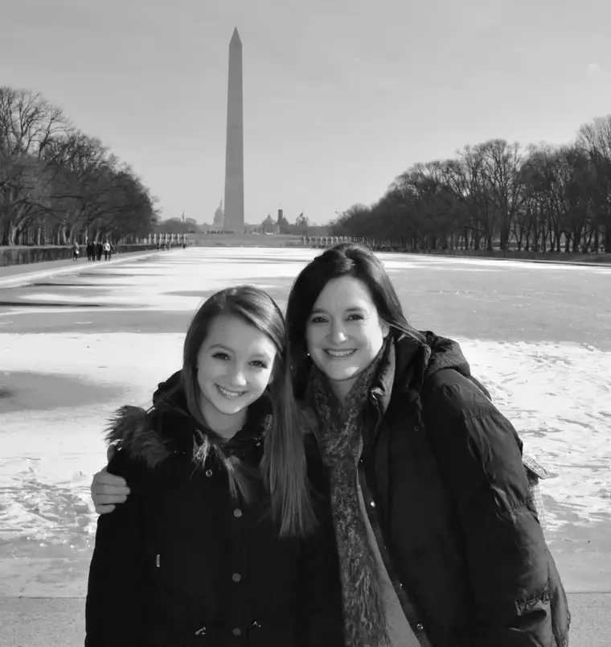
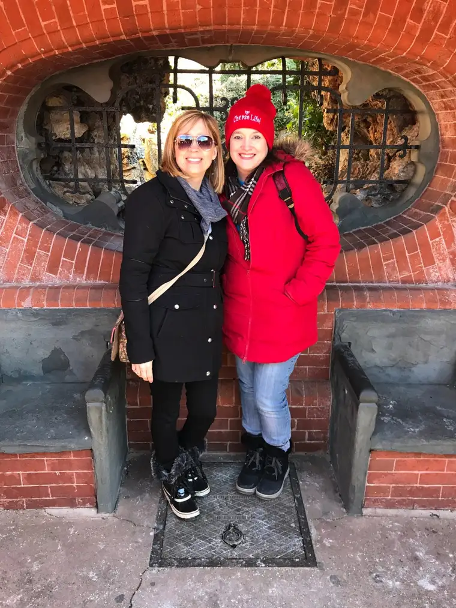
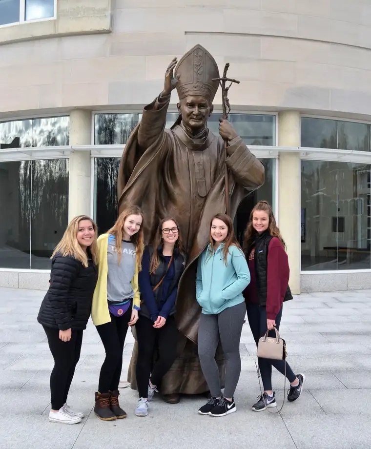

The March for Life has been, and will remain, one of my favorite experiences as the mother/chaperone of Catholic school students.
I’ve had the privilege of going three different years, and hope to attend again when our youngest is in high school (next year!). Last year, I was given the opportunity to write about the experience in The Forum, our state’s largest daily.
Each March has been a tremendous blessing, filled with prayer and purpose; a pilgrimage, an education, a chance to grow in faith and in an awareness of the great devastation of Roe v. Wade, which has brought so much destruction — both visible and invisible — to our land and world.
This year’s March was marred by a high-profile moment or two at the base of the Lincoln Memorial — a spot where I went as a chaperone with each of my city groups the three years I attended this 50-hour journey from North Dakota to our Nation’s Capitol.

Roxane Salonen and her oldest daughter, Lincoln Memorial, Jan. 2013
With so much negative attention at the end of this year’s event, the March has been tainted, temporarily, but not permanently. Because I know this is a spiritual battle, I’m going to do my part to continue bringing light to this incredible movement in the small ways I can. For this post, I will do this through visuals of a few of my moments at the Marches I’ve attended, during and after, as well as a recap from our high school’s chaplain from this year’s March for Life, which just concluded, and included nearly 200 students from our local Catholic high school alone — including my middle son.
I hope this account blesses you. I hope it brings the reality of the March to your mind and heart. I hope it reminds all that though a few moments have made a mess of this beautiful response to the Roe v. Wade decision which kills tiny children, the heart of the movement is love.
Let’s keep remembering what the March for Life is really about, and strive to continue its mission to make abortion, the annihilation of the most innocent of our country, intolerable (recap letter from our chaplain follows the photos below)…



Greetings Parents!
First, a big “thank you” to all of you for allowing your students to make the holy journey, the March for Life Pilgrimage! You have given them a precious gift. They now have experiences that will benefit them for the rest of their earthly lives. God will use them to witness to the sanctity of human life and the profundity of our faith.
In short, we were blessed. God gave the whole contingent (all five bus loads) a sense of His joy. And, as one student commented, our young people realized that they are not alone in this battle. There is a multitude of other young people who are passionate about their faith and about their pro-life convictions!
Here, then, are some of the highlights of our pilgrimage:
- Quickly after our bus ride started on Wednesday, it became apparent that a spirit of community and camaraderie would be the norm. This joyful attitude would continue throughout the entirety of the pilgrimage.
- Prayer permeated the pilgrimage. Prayer on the buses and daily Mass made our trek an offering to God.
- Upon our arrival in DC on Thursday, we celebrated Mass at a local parish, one that St. Katharine Drexel helped to found. St. Katharine made it her life’s work to serve the African American community. The parish, St. Joseph, welcomed us with open arms! They not only allowed us to use their church for Mass, but they also provided a Deacon and a server for us (and a music accompanist!). At the end of Mass, the good deacon shared with ushis appreciation of our presence and he also commented on how crucial our work was for our brothers and sisters in the womb, like the work in our country’s history to right the wrong of slavery. It was a remarkable moment!
- Oh, and St. Joseph parish allowed us to use their social hall for pizza after the Mass, supplying us with tables, chairs, cups, napkins, plates and service!
- After the pizza, we traveled to George Mason University to join thousands of other high-school students for a Catholic Youth Rally for Life. The night was spectacular: it started with a music concert; continued with much-in-demand Catholic youth-speaker Chris Stefanick; and then ended with Adoration (where you could hear a pin drop). Also, throughout the entire evening, some 50 priests were available for confessions.
- On Friday, the day of the March, we started out with Mass at the Franciscan Monastery in DC. These Franciscans are linked with the friars in the Holy Land sites in Israel. Our main celebrant was none other than Bishop Folda, who made the trip to be with us. We were joined by other Fargo-diocese students!
- After Mass, we went “en masse” to the Capitol Building and met Senator Hoeven on the steps! Representatives from Senator Cramer and Representative Armstrong were also there to greet us and recite the proclamations these two federal legislators composed to us.
- Next, it was time for the March itself, preceded by a Rally (where we heard pro-life dignitaries):
Senator Steve Daines (R-MT)
Congressman Dan Lipinski (D-IL)
Congressman Chris Smith (R-NJ)
State Representative Katrina Jackson (D-LA)
Ben Shapiro, editor-in-chief of The Daily Wire
Abby Johnson, founder of And Then There Were None
Dr. Alveda King, Director of Civil Rights for the Unborn with Priests for Life
Dr. Kathi Aultman, fellow of the American College of Obstetricians and Gynecologists
Ally Cavazos, President of Princeton Pro-Life
Carl Anderson, Supreme Knight of the Knights of Columbus
Archbishop Joseph Naumann, Chairman of the United States Conference of Catholic Bishops Pro-life Activities Committee.
- For the first time in Shanley history, we were able to stay together during the March itself!!!
- The March itself was stirring. Hundreds of thousands of us walked down Constitution Avenue to witness to life. Singing, chanting and praying could be heard. Shoulder to shoulder, we made our way in unison to the Supreme Court. Going up Capitol Hill and looking back, we could see the multitude behind us. And looking forward, we could see that we were engulfed in a family of life and grace!
- And, on completion of the March, we knew that we were part of something larger than ourselves, something that was good and true, something that was of God.
- After the March, we were able to get into our city groups and visit DC. Though some of the museums were closed, there was still much to see!
- Then, later Friday, we loaded the five buses to visit the Pentagon Memorial, to pay tribute to those who were victims of the 9/11 attack. We were able to gather together for prayer for them and their families.
- Lastly on Friday, we were able to unwind at the the Pentagon City Mall for food, fellowship and, of course, to shop.
- On Saturday, we started out with Mass at the Basilica of St. Mary there in Alexandria, VA. Blessings to the parish for allowing us to celebrate Mass there! Our students were able to get a taste of a little “old-school” Catholicism, complete with kneeling at the altar rail for Holy Communion!
- After Mass on Saturday, we were once again able to break out into our city groups for touring. One of the stops for the freshmen contingent that I was a part of was the Museum of the Bible. What a highlight! This new, state-of-the-art facility made the Bible come alive! It was so popular with students that I had to extend our time there for an additional hour. When students demand a longer stay at a Bible museum, what’s a chaplain to do? So, we stayed longer!
- Another poignant moment was our visit to Arlington National Cemetery for the changing of the guard. What a display of dignity and honor, as we remember those unknown to us (but known to God).
- After visiting the Lincoln Memorial, my group (in fact, all of the freshmen) headed to the White House for a photo. However, we knew that we could possibly be met with some who participated in the Women’s March, and who were not sympathetic to the cause of life nor the cause of faith. However, this provided us with a shining example of our students’ courage and witness. As our students assembled for a photo in front of the White House, we encountered some heckling. Without animosity, our students maintained a cheerful and peaceful disposition and gave the opposition an example of grace and peace.
- Much touring makes a pilgrim hungry, so we went to another mall for a bite to eat.
- Then, we headed to a local bowling establishment for some fun. Once the lights were lowered and the pop music came on, we enjoyed a night of bowling and fraternity. And it didn’t even matter whether we consistently hit the head pin!
- On Sunday, we had planned to have Mass at the National St. John Paul II Museum. However, because we wanted to prudently bypass any rough weather, we left DC in the morning instead of the afternoon. Again, God had great plans! We were able to find a Catholic church along our route, this time in Roanoke VA. The parish there, St. Andrew, was extremely welcoming, allowing us to celebrate Mass with them. When Mass was completed, they ushered us into their social hall where they provided us with plenty of donuts and snacks to take along with us on the bus. It’s good to belong to the family of God!
- Incidentally, I should mention that, at every parish we celebrated Mass, the parishioners would not let me leave before telling me that our students gave them so much hope for the future, not only for the pro-life movement but also for the Church. Plus, they always mentioned how polite and courteous our students were.
- Now that we are back in Fargo, the real work begins. To whomever much has been given, much will be expected. Now that God has blessed us with this journey, it is now our responsibility to intensify our efforts to “make disciples of all nations,” to be used by God to share our faith and our pro-life convictions so that no more babies will die and no more women will cry.
Q4U: Have you ever attended the March for Life? What was your biggest takeaway?